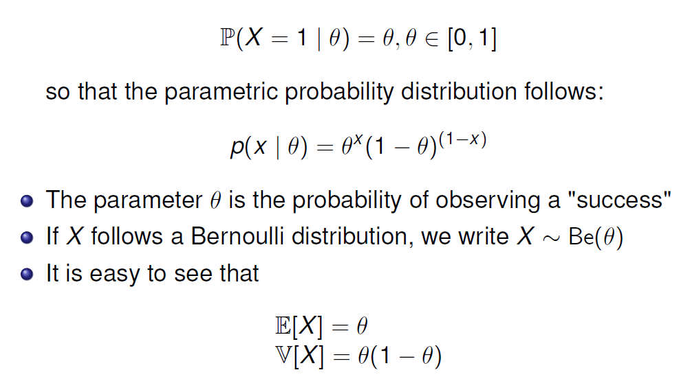
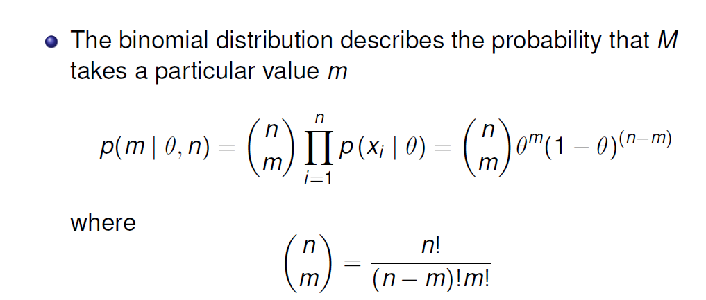
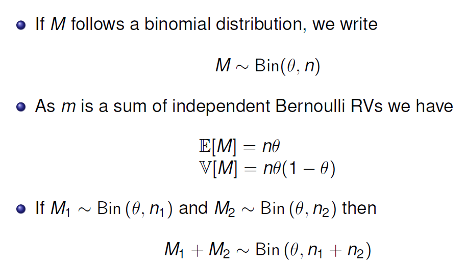
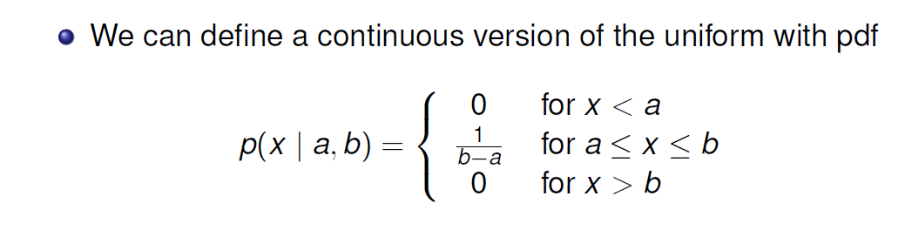
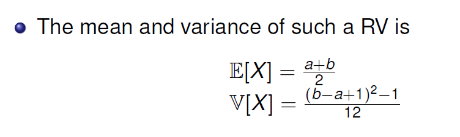
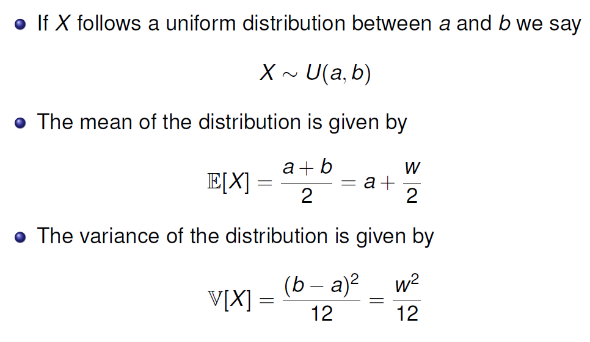
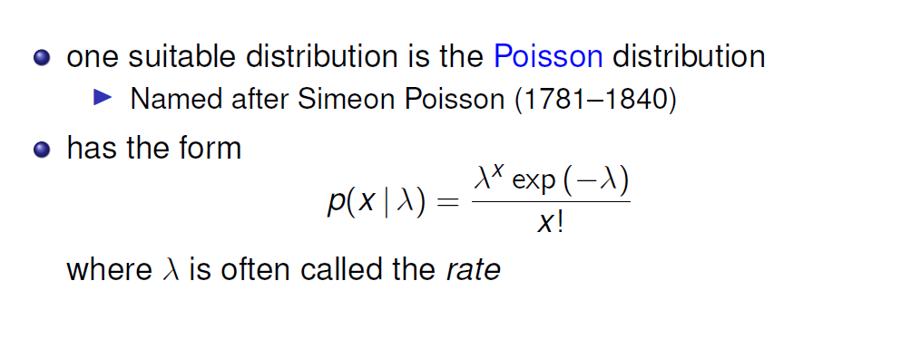
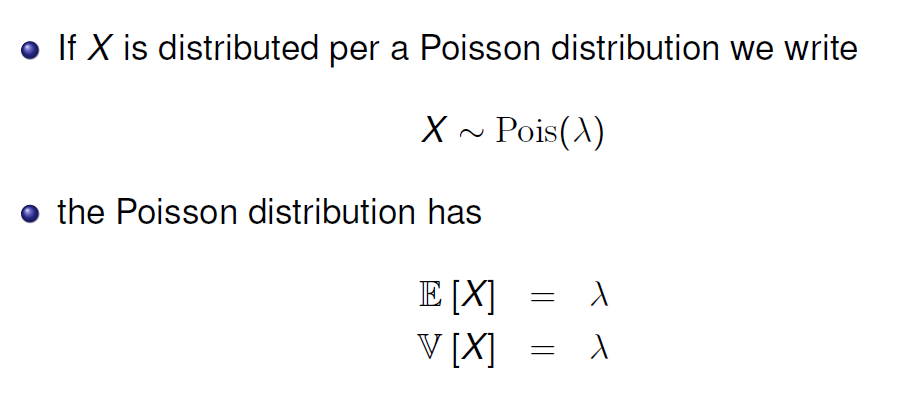
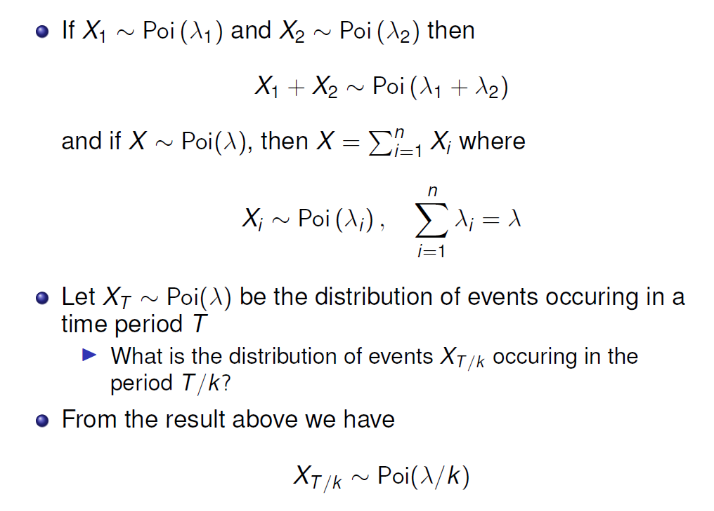

<!DOCTYPE html PUBLIC "-//W3C//DTD XHTML 1.0 Strict//EN" "http://www.w3.org/TR/xhtml1/DTD/xhtml1-strict.dtd">
<html xmlns="http://www.w3.org/1999/xhtml">
    <head>
        <meta name="keywords" content="" />
        <meta name="description" content="" />
        <meta http-equiv="content-type" content="text/html; charset=utf-8" />
		<title >Jerry Licun Pages</title>
        <link href="http://fonts.googleapis.com/css?family=Arvo" rel="stylesheet" type="text/css" />
		<link rel="stylesheet" type="text/css" href="style.css" />
    </head>
    <body>
		<div id="bg">
			<div id="outer">
				<div id="header">
					<div id="logo">
						<h1>
							<a href="#">Jerry Licun Pages</a>
						</h1>
					</div>
					<div id="nav">
						<ul> 
						<li class="first active">
								<a href="https://jerrylicun.github.io/">Home</a>
							</li>
							<li>
								<a href="https://jerrylicun.github.io/Timetable/Index/index.html">Timetable</a>
							</li>
							<li>
								<a href="https://github.com/jerrylicun">Demo</a>
							</li>
							<li>
								<a href="https://jerrylicun.github.io/About/About.html">About</a>
							</li>
							<li class="last">
								<a href="https://jerrylicun.github.io/Resume/index.html">Contact</a>
							</li>
						</ul>
						<br class="clear" />
					</div>
				</div>
				<div id="banner">
					
				</div>
				<div id="main">
					<div id="content">
						<div id="box1">
							<h2>
								常见概率分布
							</h2>
<pre>
<h3>伯努利分布（Bernoulli Distribution）</h3>只有两种可能，试验结果相互独立且对立

<h3>二项分布（Binomial distribution）</h3>是n个独立的是/非试验中成功的次数的离散概率分布，其中每次试验的成功概率为p。	


<h3>均匀分布(Uniform Distribution)</h3>在相同长度间隔的分布概率是等可能的。





w是区域范围的意思，即（b-a）.  例如1<x<3, 那w=2
	
<h3>Poisson Distribution</h3>泊松分布适合于描述单位时间（或空间）内随机事件发生的次数。

如某一服务设施在一定时间内到达的人数，电话交换机接到呼叫的次数，汽车站台的候客人数，机器出现的故障数，
自然灾害发生的次数，一块产品上的缺陷数，显微镜下单位分区内的细菌分布数等等。




<h3>在R代码中实现这些分布函数和运算</h3>
</pre>
					
						</div>
						
						<div id="box2">
							<h3>
							
							</h3>
						</div>
						<div id="box3">
							
						</div>
						<br class="clear" />
					</div>
				
					
					
	
					<br class="clear" />
				</div>
				<div id="footer">
					<div id="footerContent">
						<h3>
							About Me
						</h3>
						<p>
								I major in Master of Data Science in Monash University. As an IT faculty student, it is 
								neccessary and useful for me to record my learning stream and my codes.
							
						</p>
					</div>
					<div id="footerSidebar1">
						<h3>
							Pragramming
						</h3>
						<ul class="linkedList">
							<li class="first">
								<a href="#">Python code</a>
							</li>
							<li>
								<a href="#">C# code</a>
							</li>
							<li class="last">
								<a href="#">R code</a>
							</li>
						</ul>
					</div>
					<div id="footerSidebar2">
						<h3>
							Data Science
						</h3>
						<ul class="linkedList">
							<li class="first">
								<a href="#">Data Visualisation</a>
							</li>
							<li>
								<a href="#">Data Wrangling</a>
							</li>
							<li class="last">
								<a href="#">Data Modelling</a>
							</li>
						</ul>
					</div>
					<br class="clear" />
				</div>
			</div>
			<div id="copyright">
				&copy; Jerry Licun | Design by <a href="http://JerryLicun.github.io/" rel="nofollow"> Jerry Licun</a>
			</div>
		</div>
    </body>
</html>
